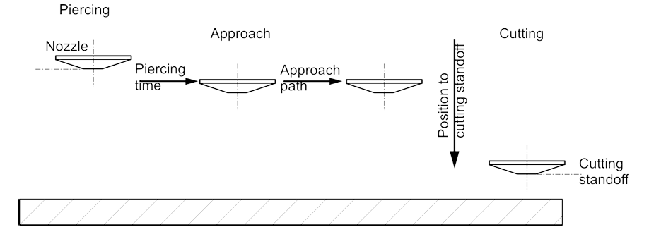
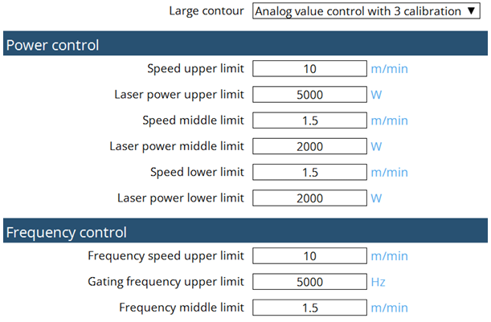

Schneiden
Anfahrstrategien
Um eine Beschädigung der Kontur durch Einstechen zu vermeiden, wird das Material ein paar Millimeter seitlich der Kontur durchstochen. Das Anfahren der Kontur erfolgt dann mit unterschiedlichen Strategien in Abhängigkeit von Materialart, Materialdicke und Konturgröße.
Normales Anfahren
Beim normalen Anfahren erfolgt das Schneiden direkt vom Startloch aus mit den Schneidparametern aus der entsprechenden Schneidtabelle.
Reduziertes Anfahren
Die Kontur wird mit reduzierter Geschwindigkeit angefahren. Leistung, Frequenz, Düsenabstand.

Anfahren mit Vorschnitt
Nach dem Einstechen wird materialdickenabhängig ein Schnitt von einigen Millimetern mit reduzierter Geschwindigkeit ausgeführt. Der Schneidkopf kehrt dann mit der letzten aktiven Positioniergeschwindigkeit zum Startloch zurück, und die Kontur wird anschließend mit den Parametern aus der entsprechenden Schneidtabelle angefahren.
Kennzeichnen und Körnen
Materialteile werden durch einen Farbumschlag auf der Materialoberfläche gekennzeichnet. Nach dem Emaillieren oder Lackieren ist die Kennzeichnung normalerweise nicht mehr spürbar, da nur eine minimale Materialmenge abgetragen wird.
Schneidverfahren
Schneiden in großen, mittleren und kleinen Konturen
Im Kontext der CNC-Programmierung von TRUMPF und des Laserschneidens beziehen sich die Begriffe große, mittlere und kleine Kontur auf die Größe und Komplexität verschiedener geometrische Merkmale in einem Schneid- oder Bearbeitungsprozess. Diese Unterscheidungen helfen beim Optimieren von Werkzeugbewegung, Schneidstrategien und Bearbeitungsgeschwindigkeit.
1. Große Konturen
-
Große Konturen beziehen sind lange, durchgehende Schnitte oder die Außenprofile eines Teils.
-
Dabei handelt es sich in der Regel um primäre Schnittbahnen, die die Außenform definieren.
Merkmale:
-
Geradlinig oder sanft gebogen.
-
Weniger Unterbrechungen.
-
Können bei höheren Geschwindigkeiten geschnitten werden, da die Gefahr von thermischem Stau oder Präzisionsverlust geringer ist.
2. Mittlere Konturen
-
Mittelgroße Merkmale innerhalb oder entlang des Teils, wie z. B. große Aussparungen, Durchbrüche oder Nuten.
-
Solche Konturen sind komplexer als große Konturen, aber weniger filigran als kleine Konturen.
Merkmale:
-
Können aufgrund mäßigen Detailreichtums Anpassungen der Schnittgeschwindigkeit erfordern.
-
Benötigen ein gewisses Maß an Präzisionssteuerung, um die Genauigkeit aufrechtzuerhalten.
-
Können die Wärmeableitung und das Materialverhalten beeinflussen.
3. Kleine Konturen
-
Dabei handelt es sich um detaillierte, filigrane Schnitte wie kleine Durchbrüche, feine Muster oder spitze Ecken.
-
Das Schneiden kleiner Konturen erfordert eine höhere Präzision und geringere Geschwindigkeiten, um die Genauigkeit aufrechtzuerhalten und Defekte zu vermeiden.
Merkmale:
-
Oftmals handelt es sich um enge Radien, komplizierte Formen oder vollgepackte Schneidbereiche.
-
Anfällig für thermische Effekte (Schmelzen, Grate, Materialverzug).
-
Können Anpassungsstrategien wie reduzierte Leistung, Düsenfeinsteuerung, oder Microjoint-Techniken erfordern.
Analoge Kalibrierkurven
TRUMPF verwendet eine 3-Punkt-Kalibrierkurve für die analoge Lasersteuerung.

FlyLine
FlyLine ist eine Bearbeitungsstrategie, die beim Bearbeiten bestimmter Tafeltypen zu erheblicher Zeiteinsparung beitragen kann. Besonders effektiv ist FlyLine bei Lochgittern.
-
Der Laserstrahl wird on-the-fly mit hoher Positioniergenauigkeit ein- und abgeschaltet. Die Achsen werden beim Zu- und Abschalten des Laserstrahls nicht gestoppt.
-
Einzelne Konturen, die nicht in einer Linie liegen, werden in achsparallele Konturabschnitte aufgeteilt. Damit kann Eckenbearbeitung vermieden werden. Die Geschwindigkeit wird nur für die wenigen Richtungswechsel reduziert.